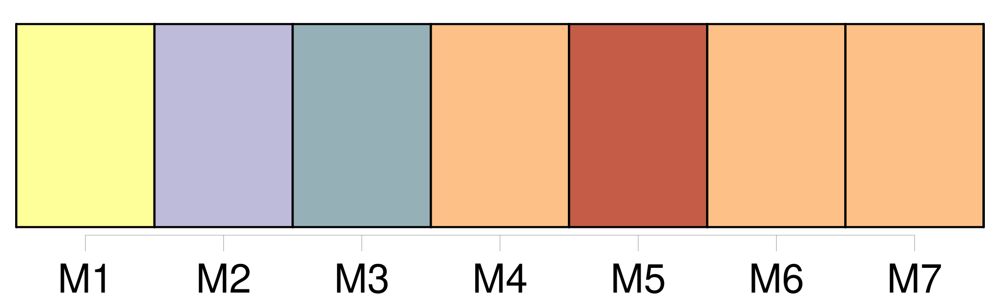
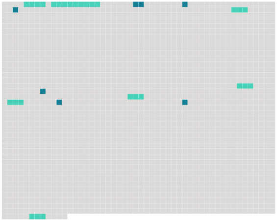

Longueur nb maillons : 15 mentions |
  |
Il y a encore [le frère du tailleur] , [Louis Pied Bot,] [jeune homme de vingt-cinq ans] , de caractère doux, et [que] [son] infirmité rend timide. C'est avec [lui] qu'elle coud finement les doublures de soie et fait les boutonnières perlées. C'est aussi avec [lui] qu'elle chante à l'église le dimanche. [1 phrases] Comme elle l'a fait autrefois pour [Louis Pied Bot] , Mlle Charmes enseigne la musique à Églantine Lumière. [27 phrases] Elle ne prend la route que lorsque [Louis Pied Bot] demande à faire un bout de promenade avec elle pour délasser [ses] jambes si longtemps croisées sur l'établi. [3 phrases]
Dès qu'ils sont proches, elle vient à eux pour parler et rire un instant, puis elle rentre, tandis que [Louis Pied Bot] , le visage pensif, s'en retourne lentement vers la maison de son frère. Aujourd'hui, malgré ce beau soir de mai, [Louis Pied Bot] ne parle pas de promenade. [Il] sait que Noël Barray est revenu ce matin d'Algérie, où il vient de passer sa dernière année d'école. [Il] l'annonce à Églantine dont le visage prend aussitôt ce rayonnement qui lui fait un teint de fleur et lui met au front comme un reflet de soleil. [58 phrases] Elle avait [Louis Pied Bot] et Marguerite Dupré. |
 |
La ressource peut être téléchargée sur la page Ortolang
Si vous avez des questions ou vous voyez des erreurs, merci d'envoyer un mail à silvia.federzoni89@gmail.com
Site développé par S. Federzoni (contact)